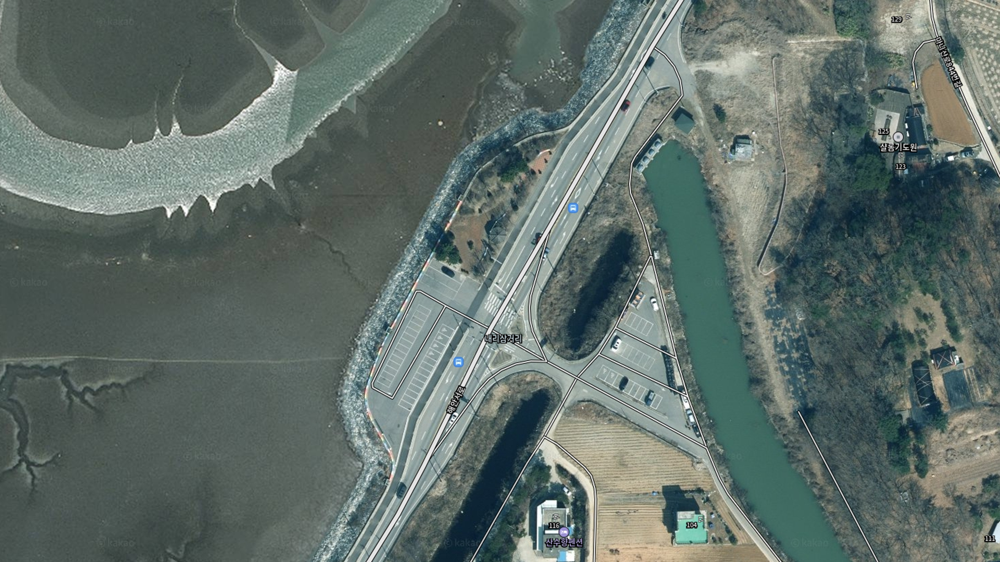
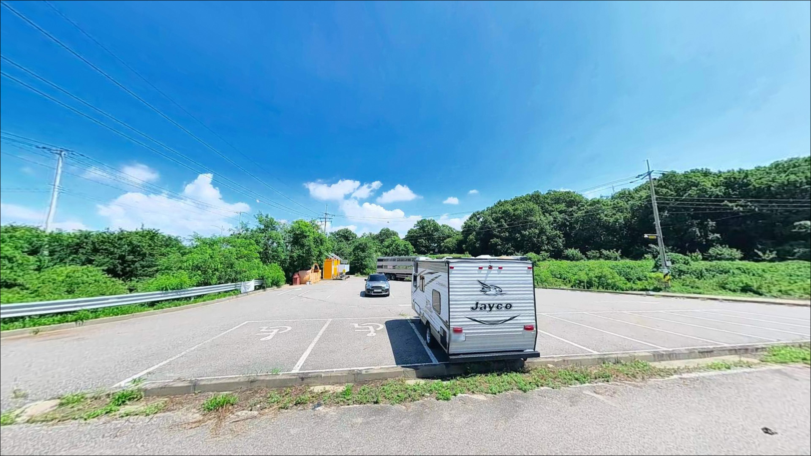
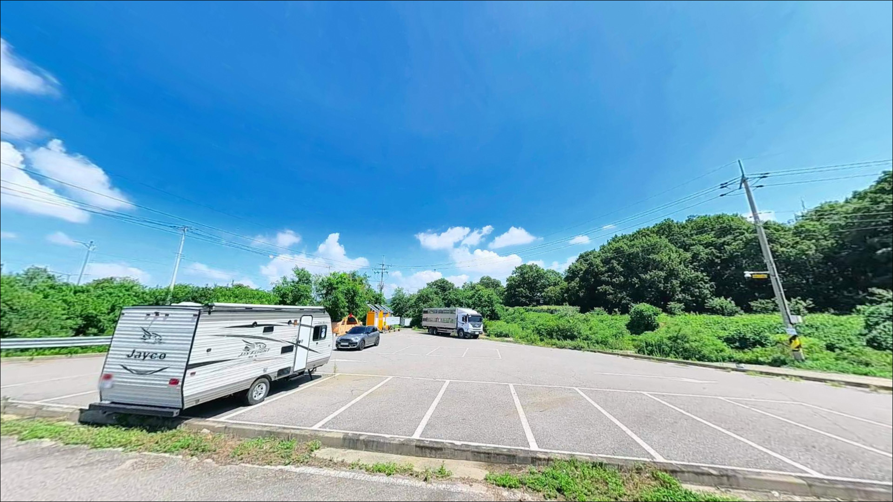
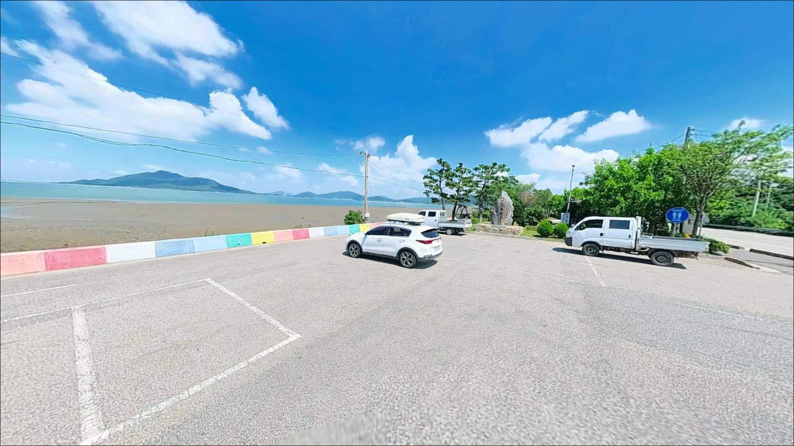
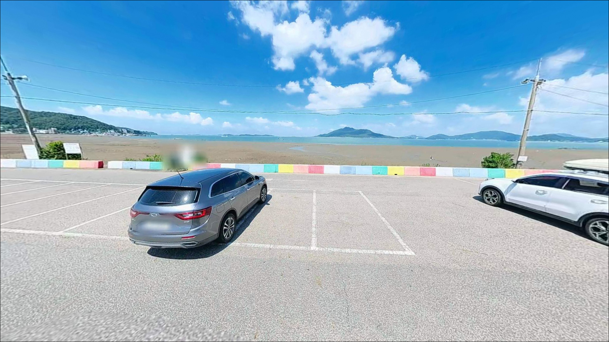
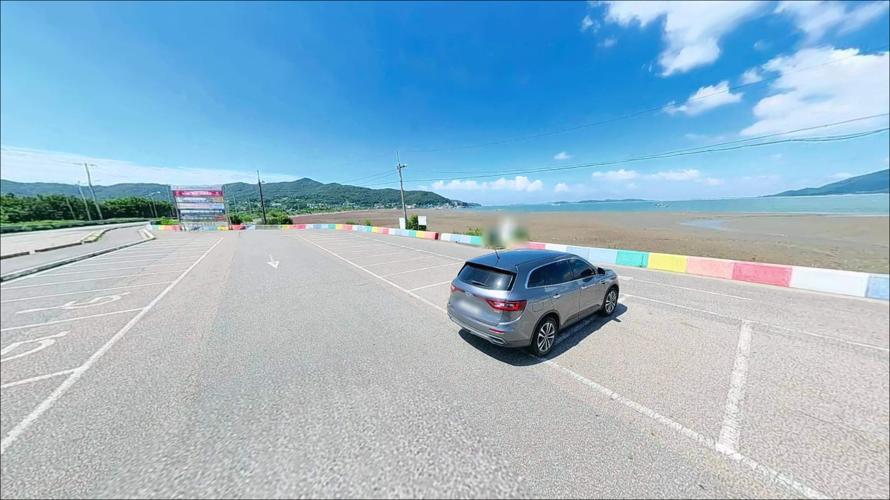
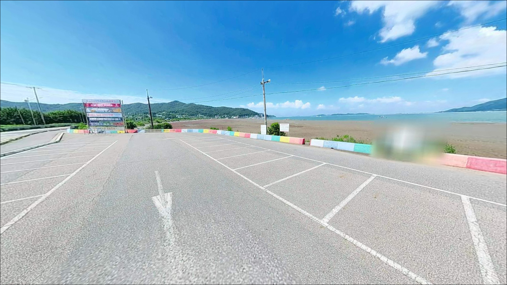
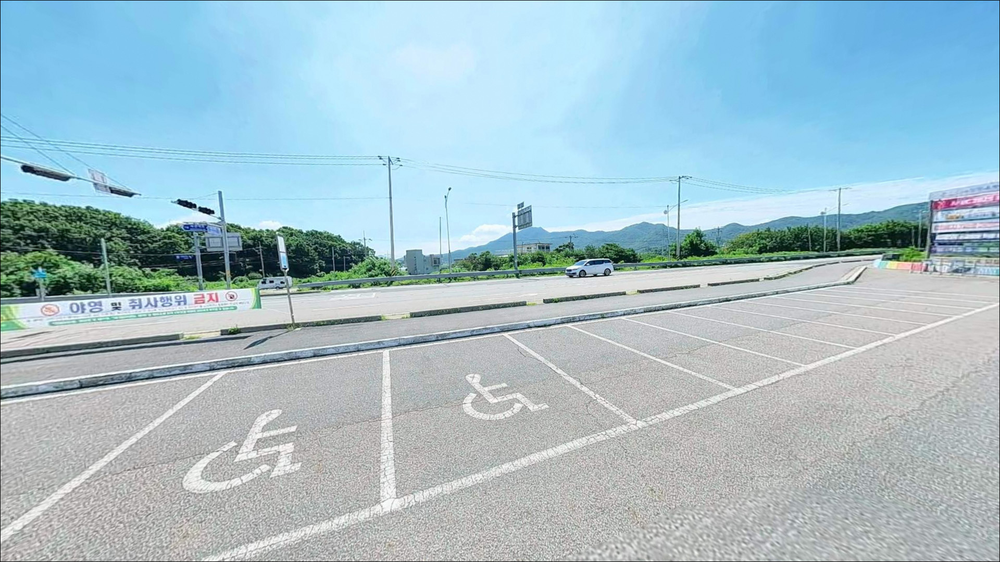
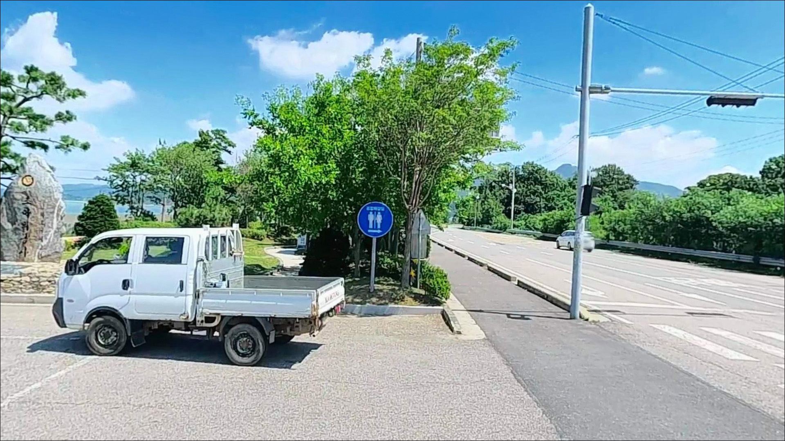

내리쉼터(송강돈대 옆), 강화도 인천 강화군 노을빛이 스며드는 차박, 낚시 겸용 감성 장소
이 페이지에는 광고(제휴 링크 포함)가 있으며, 광고 링크를 통해 구매하면 운영자가 판매 수익 또는 수수료를 받을 수 있습니다. 포인트 사진: 카카오맵 스카이뷰·로드뷰. 이 페이지의 지도·사진 이미지는 카카오맵의 실제 서비스 이미지와 다를 수 있습니다.


포인트 안내
내리쉼터 (송강돈대 옆)
인천 강화군 화도면 내리 102
물때 확인 없이 내리쉼터를 찾으면
넓은 갯벌만 마주하고 돌아오게 됩니다.
강화 남단 갯벌 해안은 썰물 시
수백 미터 뻘밭이 드러나
어떤 채비로도 낚시 수심을 확보할 수 없는 구조입니다.
만조 전후 타이밍을 맞춰야
비로소 이 포인트가 작동하기 시작합니다.
이 글은 내리쉼터의
물때 활용 조건, 낚시 방식 적합성,
진입 여건, 차박 체류 조건을
중심으로 정리합니다.
조황 단정이나 특정 어종 보장은
이 글의 범위에 포함되지 않습니다.

1. 포인트 위치와 진입 동선
내리쉼터는 강화 남단을 따라 이어지는
화도면 해안남로 변에 위치합니다.
해안남로는 2차선 포장도로로,
별도의 비포장 진입로 없이
도로변에서 바로 접근 가능한 구조입니다.
내비게이션 기준 화도면 내리 방향으로
진입하면 도달할 수 있습니다.
주차는 쉼터 인근 도로변 공터를
활용하는 방식이 일반적입니다.
소형차에서 SUV 수준까지는
접근이 가능한 편이나,
대형 캠핑카나 트레일러를 연결한 차량이라면
출발 전 위성지도로 주차 공간 규모를 확인하는 것이
현실적인 준비입니다.
회차 공간이 넉넉하지 않을 수 있어
초행이라면 진입로를 미리 파악해두는 것이 좋습니다.

2. 차박 환경과 야간 체류 여건
화도면 내리 일대는 마니산 서사면이
바다와 만나는 구간으로,
민가 밀집도가 낮고 관광 통행이
주간에 집중되는 편입니다.
야간에는 차량 통행이 줄고
비교적 조용한 환경이 형성되는 편입니다.
가로등 수는 많지 않을 가능성이 있어
야간 낚시 시 개인 조명은 필수입니다.
내리쉼터는 차박 전용 공간이 아니며,
주차 면적이 한두 대 수준으로 작아
장시간 체류에는 여건이 맞지 않는 편입니다.
낚시를 마치고 잠깐 쉬는 형태로는
활용이 가능한 수준이나,
차박을 메인으로 삼기에는
공간 확보 여건을 사전에 확인해야 합니다.
쉼터 바로 옆에
송강돈대 문화재 구역이 인접해 있습니다.
문화재 보호 구역 인근에서는
야영·취사 행위에 제한이 따를 수 있으므로,
출발 전에 강화군청 또는 문화재청
안내를 통해 확인하는 것이 먼저입니다.


3. 주변 편의시설 및 인프라 현황
내리 102번지 인근에서 확인된
편의점은 해안남로 변의 GS25와
세븐일레븐 두 곳입니다.
두 곳 모두 내리쉼터에서 서쪽으로
약 2~3km 거리 구간에 위치합니다.
GS25는 23시 30분에 영업을 마감하는 매장으로,
24시간 운영이 아닌 점을 염두에 두어야 합니다.
야간 낚시 전에 보급을 미리 마치는 편이 좋습니다.
낚시 소품이나 대용량 식재료, 얼음 등은
강화읍 방면으로 이동해야 구할 수 있는 편입니다.
응급 상황을 대비한
비상약품과 수분은 출발 전에
자급 기준으로 완비하고 이동하는 것이 현실적입니다.

4. 방문 전 반드시 챙겨야 할 준비사항
내리쉼터 방문에서 가장 먼저 확인할 것은
물때입니다.
강화 갯벌 해안은 만조 전후 2시간이
사실상 유일한 낚시 타이밍입니다.
바다타임에서 화도면 기준 물때를 확인하고,
들물 진행 중~만조 전후를 기준으로
출발 시각을 맞추는 것이 기본 전략입니다.
서해 갯벌 특성상 밀물 속도가 빠른 구간이 있어,
갯벌 방향으로 접근할 경우에는
밀물 진행 방향과 철수 경로를
반드시 미리 파악해 두어야 합니다.
야간 낚시라면 발판 상태 확인과
미끄럼 사고에 주의가 필요하며,
구명조끼와 헤드랜턴은 기본 안전 장비입니다.
송강돈대 인근은 문화재 보호 구역과
겹치는 구간이 있습니다.
이 일대에서 낚시 자체는 일반적으로
제한 대상이 아니지만,
시설물 손상이나 쓰레기 방치는
문화재 보호 의무와 무관하지 않으므로
쓰레기는 전량 수거 후 반출하는 것이
기본 매너입니다.

5. 물때를 모르고 갔다가 갯벌만 보다 오는 이유
내리쉼터의 낚시 가능 여부는
지형보다 물때에 달려 있습니다.
강화 남단 갯벌 해안은 썰물 시
갯벌이 넓게 드러나
수심 자체가 사라지는 구조입니다.
간조 전후에는 채비를 던져도
낚시 수심이 형성되지 않아
포인트가 작동하지 않습니다.
들물이 진행되면서 갯벌이 덮이기 시작하면
연안 수심이 서서히 확보됩니다.
먹이 활동을 위해 이동하는 어종들이
얕은 수심대로 접근하는 타이밍이 만들어지는 것도
이 시간대입니다.
만조 전 1시간~만조 후 1시간이
이 포인트에서 집중할 수 있는 시간대입니다.
바닥은 뻘과 잔자갈이 혼합된
갯벌형 구조로 추정됩니다.
원투 채비를 멀리 보내면
밑걸림보다는 채비 끌림이 주된 변수가 됩니다.
조류 세기는 강하지 않은 편이나,
만조 전후 약한 조류 흐름이 발생하는 구간이 있어
봉돌 여분은 넉넉하게 준비하는 편이 좋습니다.
최신 조황은 가기 전에 꼭 검색해 보시기 바랍니다.


6. 내리쉼터에 어울리는 낚시 스타일
이 포인트에서 가장 현실적인 낚시는
원투낚시입니다.
갯벌형 바닥과 완만한 수심 구조에서
가장 잘 맞는 방식이며,
강화 남단 갯벌 해안에서
망둥어 원투낚시가 일반적인 패턴으로
자리 잡은 구간입니다.
여름~가을이 주된 시즌이며,
갯지렁이 미끼로 단순하게 접근할 수 있습니다.
붕장어도 노려볼 만한 어종입니다.
밀물 야간 원투 타이밍에
갯벌 수로 주변 바닥을 탐색하는 방식이
이 지형과 잘 어울립니다.
낮보다는 야간 들물 타이밍에
입질 가능성이 올라가는 편입니다.
숭어는 밀물 진행 중
얕은 수심대에서 먹이 활동을 하는 어종으로,
만조 전후 수면 가까이 접근하는 경우가 있습니다.
들물 초기 얕은 수심대에서는
장대를 활용한 짧은 낚시 방식이
원투보다 효율적일 수 있습니다.

7. 대안 포인트와 플랜 B 동선
내리쉼터 낚시 여건이 기대에 미치지 못할 때,
가장 먼저 이동을 고려할 수 있는 곳은
분오리항입니다.
화도면 사기리에 위치한 소규모 항구로,
낚시 포인트로 알려진 곳이며
내리쉼터에서 약 7~8km 거리입니다.
어판장과 접안 여건이 갖춰진 편이라
갯벌 접안형인 내리쉼터보다
낚시 환경이 안정적인 편입니다.
동막해변도 대안으로 활용할 수 있습니다.
화도면 동막리에 위치하며
내리쉼터에서 약 5km 거리입니다.
주차 공간이 넓고 접근이 쉬운 편이라
원투낚시 탐색 거점으로
이동하기에 무리가 없습니다.
장화리 포구는 화도면 서쪽 끝에 위치하며,
모래와 진흙이 혼합된 지형입니다.
망둥어 낚시가 이루어지는 구간으로,
일몰 조망지 인근 주차 공간도 활용할 수 있어
내리쉼터와 함께
묶어 이동하기 좋은 동선입니다.

물때 한 번 맞추면
내리쉼터가 달라 보입니다
망둥어 원투낚시나 붕장어 야간 낚시를
즐기는 낚시인이라면
내리쉼터는 한 번 탐색해볼 만한 곳입니다.
인파가 몰리는 메이저 포인트가 아니라
직접 발품을 팔아야 하는 갯벌형 연안이지만,
물때를 맞추면
조용한 낚시를 즐길 수 있는 환경이 갖춰집니다.
반면 물때 확인 없이 방문하거나
편의시설이 필요한 방문자에게는
기대를 맞추기 어려운 포인트입니다.
물때 확인, 자급 준비, 문화재 구역 사전 확인,
이 세 가지를 챙기고 간다면
강화 남단에서 조용한 갯벌 낚시를
경험할 수 있는 곳이 됩니다.
차박이란 차량을 숙박 공간으로 활용하며
현장에서 하룻밤 머무는 여행 방식입니다.
낚시와 차박을 함께 계획한다면
송강돈대 인근 문화재 구역 조건을
미리 확인해두고,
여건이 맞지 않는 경우에는
동막해변이나 장화리 방면을
차박 베이스로 고려하는 편이 현실적입니다.